| Fotos registradas | 96 / 96 |
| Reprojeção (mediana / média) | 1.09 / 1.27 px |
| Escala: resíduo RMS | 0.35 mm (30 cantos) |
| Pontos densos (total / objeto) | 3,271,215 / 418,139 |
| Comprimento × largura × altura | 119.1 × 65.2 × 81.8 mm |
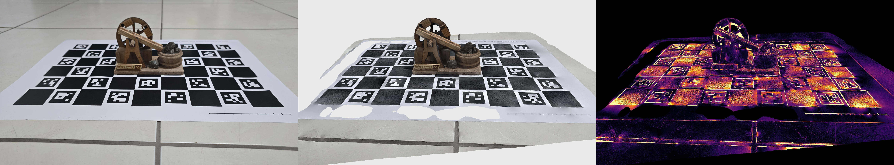
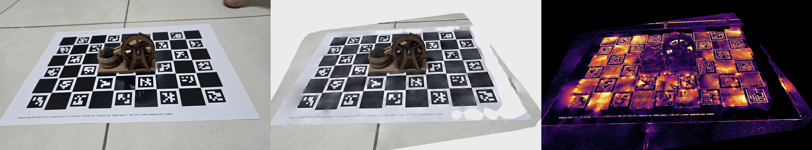
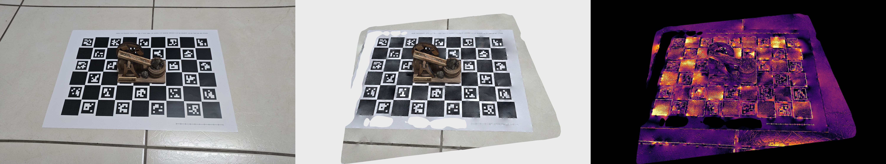
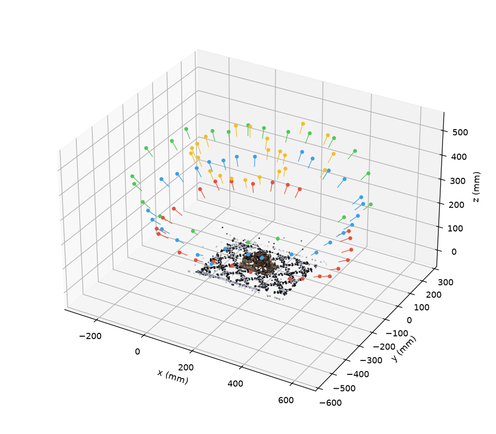
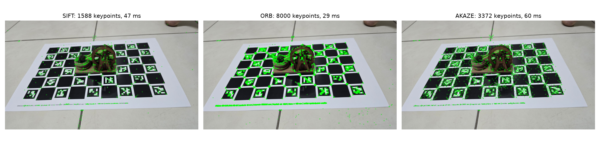
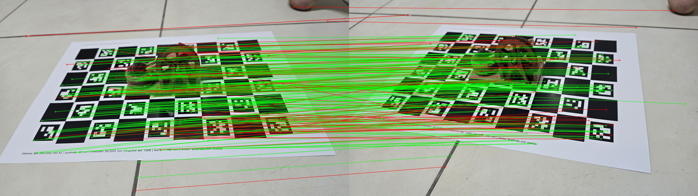
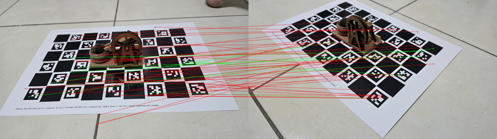
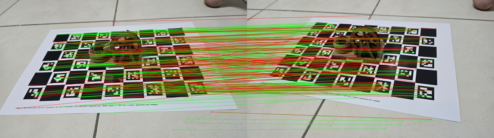
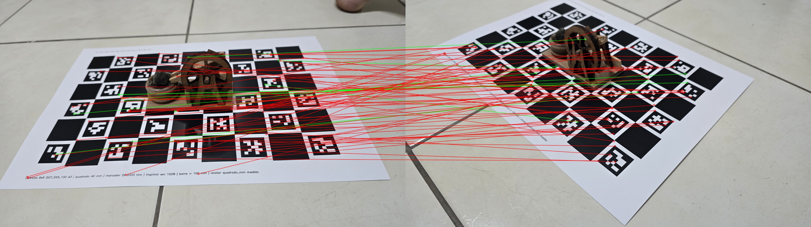
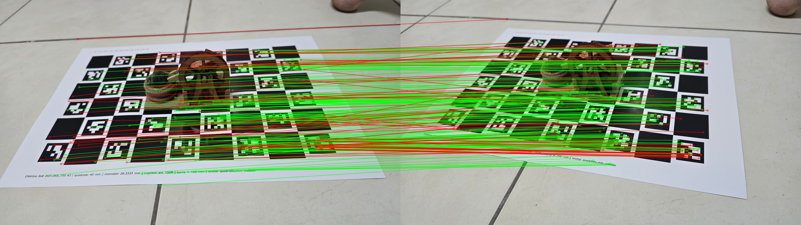
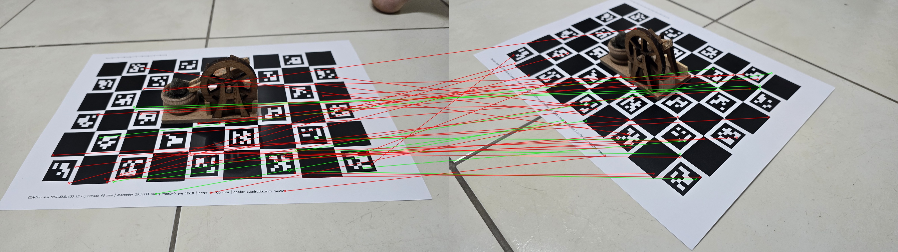
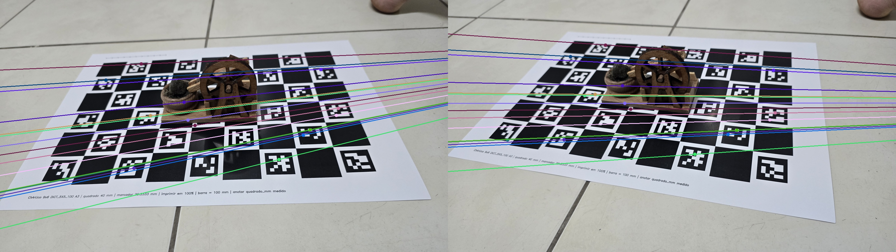
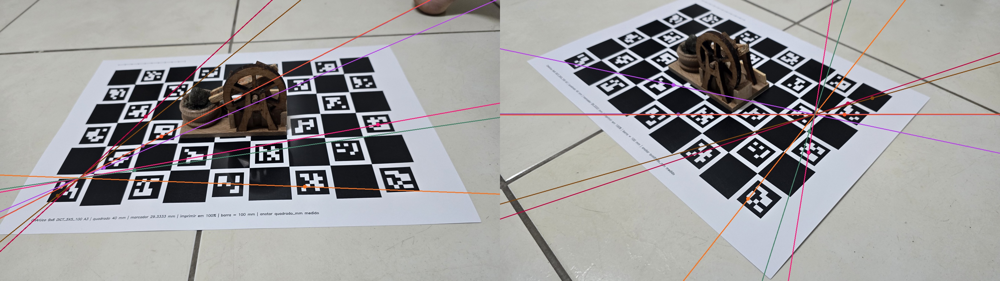
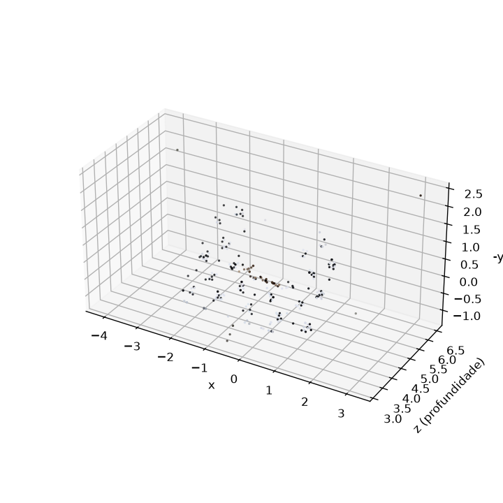
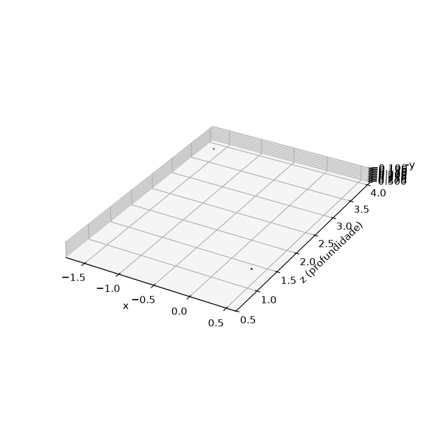


Modelo 3D com câmeras: cena.glb (abra em gltf-viewer.donmccurdy.com arrastando o arquivo) · malha texturizada: mvs/scene_texture.obj